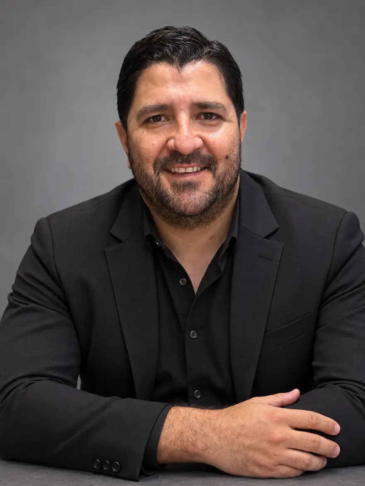
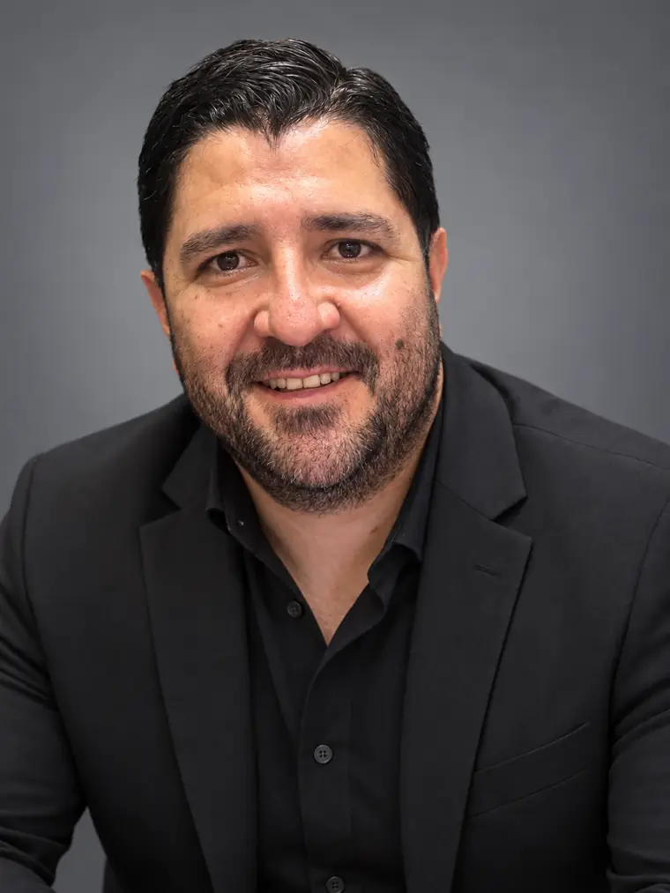
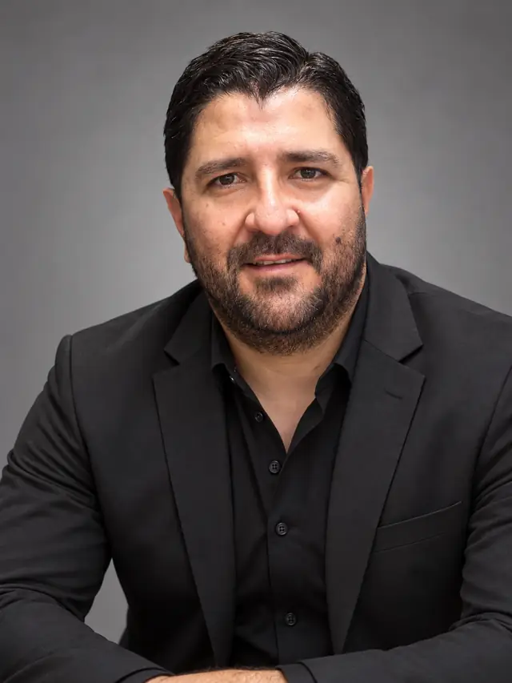
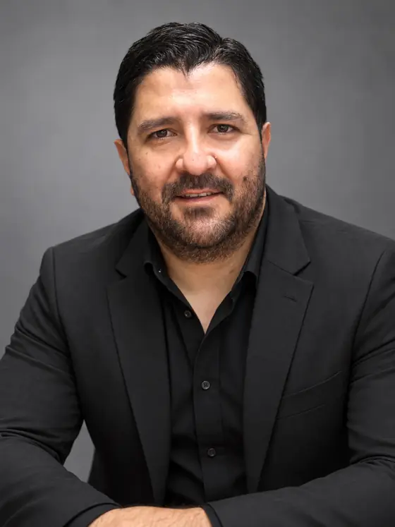
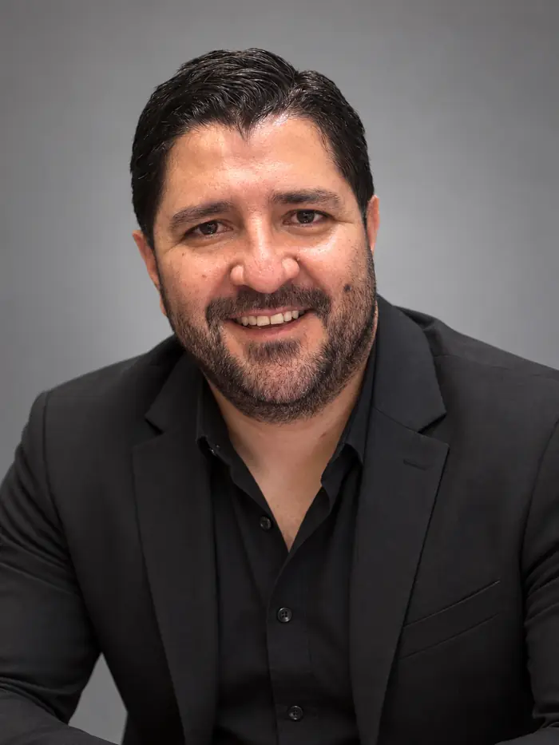

Labor Self-Exploitation: A New Intersectional Categorization to Understand Its Complexity
José BayonaInvestigación y Consultoría
Investigo para comprender. Transfiero para transformar.
Transferencia de conocimiento científico para el análisis financiero, la comunicación estratégica, la toma de decisiones y la reputación organizacional.
- Evidenciapara decidir
- Argumentopara sostener
- Estrategiapara comunicar


Investigador antes que consultor
Sobre José Bayona
José Andrés Bayona Soto es contador público y magíster en administración. Su punto de entrada no es el de un consultor convencional, sino el de un investigador que transfiere conocimiento especializado.
Su trayectoria investigativa se orienta al análisis financiero, organizacional, argumentativo, comunicacional y reputacional de empresas, cooperativas, sectores económicos e instituciones. Ese recorrido no se presenta como simple experiencia de consultoría, sino como conocimiento científico acumulado y transferible.
Ese conocimiento acumulado se convierte en informes, diagnósticos, procesos formativos y productos de divulgación para que las organizaciones fortalezcan su capacidad de análisis, decisión, comunicación y rendición de cuentas.
Misión
Investigo lo que las organizaciones deciden, comunican y demuestran. Transfiero ese conocimiento para que decidan con evidencia, argumenten con rigor y construyan una reputación que se sostenga.
Visión
Ser referente en investigación y consultoría para organizaciones que eligen la evidencia antes que la opinión, el argumento antes que el discurso y la coherencia antes que la imagen.
No soy un consultor que ocasionalmente investiga. Soy un investigador que convierte conocimiento en estrategia.
El eje que integra
Reputación organizacional
El juicio colectivo que los grupos de interés construyen sobre una organización a partir de la coherencia entre lo que decide, lo que comunica y lo que demuestra con evidencia.
No es imagen ni percepción pasajera: es un activo intangible que se acumula, se erosiona y se recupera según la calidad de sus argumentos y la consistencia de sus actos. Por eso deja de administrarse por intuición y se convierte en un objeto que se investiga, se diagnostica y se gestiona.
Análisis financieroEvidencia
Aporta el respaldo verificable de lo que la organización afirma: liquidez, endeudamiento, rentabilidad, riesgo y desempeño.
Pensamiento críticoArgumento
Examina la solidez de los razonamientos institucionales y detecta los sesgos y falacias que debilitan la credibilidad.
Comunicación estratégicaEstrategia
Traduce la evidencia en mensajes legítimos, transparentes y coherentes con los grupos de interés.

La reputación no se declara: se demuestra con evidencia, se sostiene con argumentos y se comunica con estrategia.
Herramientas de pensamiento crítico
44 falacias lógicas
Un inventario para detectar razonamientos débiles en informes, memorias y discursos institucionales.
10 falacias financieras
De la cifra única a la proyección lineal: errores frecuentes al leer activos, pasivos, ingresos y resultados.
Sesgos cognitivos
Confirmación, anclaje y optimismo: interpretaciones que condicionan una decisión antes de revisar los datos.
Modelos mentales
La navaja de Ockham, la de Hanlon y otras herramientas para decidir con menos supuestos y menos prejuicios.
Estructura del argumento
Qué se afirma, con qué datos, bajo qué garantía y con qué respaldo, siguiendo a Toulmin y a Weston.
Falsación
Buscar lo que podría desmentir una hipótesis antes de aceptarla como explicación, como propone Popper.
No digoDigo
Realizo diagnósticos financieros.Transfiero conocimiento financiero aplicado mediante diagnósticos construidos con evidencia, análisis histórico, interpretación crítica y recomendaciones estratégicas.
Dicto capacitaciones.Desarrollo procesos formativos derivados de investigación aplicada, diseñados para fortalecer capacidades de análisis, interpretación y decisión.
Elaboro informes.Construyo productos de conocimiento que organizan evidencia, interpretan patrones y generan lineamientos de mejora para la gestión empresarial e institucional.
Modelo de transferencia
Líneas de consultoría
Cada línea parte de un producto base y se contrata de dos maneras. La diferencia no está en la cantidad de entregables, sino en el nivel de apropiación del conocimiento.
Consultoría
Transferencia documental del conocimiento
Entrega de un producto técnico, ejecutivo o académico derivado de un análisis especializado.
- Informe financiero o diagnóstico empresarial
- Estudio sectorial o documento de benchmarking
- Análisis de discurso institucional
- Documento de recomendaciones estratégicas
Para organizaciones que requieren un documento para comprender un problema, interpretar evidencia y disponer de recomendaciones aplicables.
Acompañamiento
Transferencia integral con socialización ejecutiva
Incluye todo lo anterior y agrega un proceso de apropiación: explicar, discutir e interpretar los hallazgos con quienes deciden.
- Informe completo y atlas ejecutivo de resultados
- Presentación institucional y socialización presencial, virtual o híbrida
- Taller de interpretación de hallazgos
- Documento ejecutivo de conclusiones
Un informe comunica resultados; una socialización ejecutiva permite que el conocimiento sea comprendido y apropiado.
Análisis financiero estratégicoDiagnóstico Financiero Estratégico JB
No entrego únicamente indicadores; transfiero una lectura estratégica de la situación financiera de la organización.
Qué necesidad atiende
Muchas organizaciones tienen estados financieros, reportes contables e indicadores, pero no una interpretación estratégica de lo que esos datos significan. La dificultad no es la falta de información, sino su lectura, comparación y traducción en decisiones.
A quién se dirige
Empresas, cooperativas, emprendimientos, instituciones educativas, organizaciones sociales, entidades solidarias y equipos directivos.
Pregunta orientadora: ¿Las decisiones financieras se apoyan en evidencia o en intuiciones?
Qué actividades comprende
- Caracterización financiera inicial
- Análisis vertical y horizontal
- Indicadores de liquidez, endeudamiento, rentabilidad, solvencia y desempeño
- Fuentes y usos de recursos
- Tendencias y series temporales
- Z-Altman Score o indicadores de crisis, cuando aplique
- Interpretación estratégica y recomendaciones
ConsultoríaInforme en PDF, matriz de indicadores, síntesis ejecutiva y recomendaciones.
AcompañamientoInforme completo, presentación ejecutiva, socialización virtual o presencial, taller de interpretación de indicadores y documento breve de conclusiones.
Estudios sectoriales e investigación aplicadaInforme Sectorial y Financiero JB
No elaboro reportes descriptivos; construyo evidencia sectorial para orientar decisiones empresariales, académicas e institucionales.
Qué necesidad atiende
Sin comparación sectorial no es posible saber si un resultado es bueno, débil, atípico o estructural. El estudio ubica a la organización dentro de su contexto competitivo, histórico y territorial.
A quién se dirige
Empresas, gremios, cooperativas, universidades, grupos de investigación, programas académicos, cámaras de comercio, entidades públicas y organizaciones territoriales.
Pregunta orientadora: ¿Los resultados actuales son competitivos o apenas aceptables?
Qué actividades comprende
- Definición del sector o población
- Caracterización empresarial o institucional
- Estructuración y depuración de datos
- Análisis estadístico descriptivo
- Benchmarking financiero
- Clusterización según patrones similares
- Análisis longitudinal o transversal
ConsultoríaInforme sectorial, matriz de datos procesada cuando aplique, síntesis de hallazgos y recomendaciones.
AcompañamientoInforme completo, presentación institucional, socialización ejecutiva, diálogo con actores interesados y documento de conclusiones estratégicas.
Pensamiento crítico, sesgos y falaciasLaboratorio de Pensamiento Crítico y Transparencia Argumentativa JB
No reviso únicamente textos o informes; identifico cómo una organización construye confianza, legitima decisiones y comunica resultados ante sus grupos de interés.
Qué necesidad atiende
Expresiones como «somos líderes», «crecemos juntos» o «generamos confianza» pueden carecer de evidencia suficiente. El reto no es dejar de comunicar positivamente, sino hacerlo con sustento argumentativo, verificabilidad y claridad.
A quién se dirige
Cooperativas, empresas, instituciones públicas, universidades, áreas de comunicaciones, consejos directivos, comités de gestión y organizaciones que producen informes, memorias o reportes de gestión.
Pregunta orientadora: ¿Las afirmaciones institucionales están respaldadas por evidencia verificable?
Qué actividades comprende
- Revisión de informes, memorias y discursos institucionales
- Identificación de patrones argumentativos
- Detección de falacias y debilidades argumentativas
- Análisis de sesgos de confirmación, anclaje u optimismo
- Lectura de cómo se construyen confianza y legitimidad
- Lineamientos de comunicación basada en evidencia
ConsultoríaInforme de análisis crítico o argumentativo, matriz de hallazgos, clasificación de patrones y recomendaciones.
AcompañamientoInforme completo, taller de interpretación, presentación ejecutiva, lineamientos de mejora y documento de conclusiones.
Formación ejecutiva y académicaAula JB Finanzas, Decisión y Pensamiento Crítico
No dicto capacitaciones genéricas; diseño experiencias de transferencia para que las personas comprendan, interpreten y apliquen conocimiento especializado.
Qué necesidad atiende
Muchas capacitaciones transmiten información pero no generan apropiación. El reto no es dictar temas, sino instalar capacidades en problemas concretos.
A quién se dirige
Empresas, universidades, programas académicos, cooperativas, gremios, equipos directivos, docentes, estudiantes, semilleros de investigación, emprendedores y profesionales.
Pregunta orientadora: ¿El objetivo es sensibilizar, formar o instalar herramientas aplicadas?
Qué actividades comprende
- Diagnóstico de la necesidad formativa
- Diseño del contenido y la metodología
- Guías, diapositivas, ejercicios y casos
- Conferencia, taller, seminario, curso o clase aplicada
- Aplicación práctica y discusión crítica
- Síntesis de aprendizajes y conclusiones
Capacitación: materialGuía formativa, módulo académico, presentación, ejercicios, lectura base o material didáctico.
Capacitación: taller o cursoEspacio formativo con material de apoyo, memoria de la sesión y conclusiones aplicadas.
Comunicación científica y divulgaciónSala de Comunicación Científica JB
No publico contenidos aislados; construyo canales de transferencia para que el conocimiento circule, se comprenda y genere valor.
Qué necesidad atiende
Mucho conocimiento académico y técnico no llega a quienes podrían usarlo porque permanece en informes extensos o documentos de baja circulación.
A quién se dirige
Comunidades académicas, empresas, instituciones, programas de formación, estudiantes y profesionales que necesitan comprender conocimiento técnico en formatos accesibles.
Pregunta orientadora: ¿Qué acción se espera después de la divulgación?
Qué actividades comprende
- Selección del estudio o hallazgo a divulgar
- Traducción del lenguaje técnico a lenguaje claro
- Diseño narrativo del contenido
- Ebook, boletín, guía, newsletter o artículo corto
- Carruseles, guiones de podcast y diapositivas
- Clase abierta, conferencia o presentación
ConsultoríaEbook, boletín, guía, newsletter, documento divulgativo, artículo corto o pieza para redes.
AcompañamientoProducto principal, guion de podcast, serie de publicaciones, presentación, socialización y documento de conclusiones.
Los informes no constituyen auditoría, evaluación jurídica, certificación normativa ni dictamen financiero, salvo que se contraten expresamente con ese alcance. Tienen carácter confidencial cuando la organización así lo requiera.
Ruta de transferencia
Metodología en cuatro momentos
Cada propuesta se ajusta a las necesidades de la organización. La consultoría recorre los dos primeros momentos; el acompañamiento, los cuatro.
Análisis especializado
Revisión, organización, clasificación e interpretación de la información.
Elaboración del informe
Documento técnico con resultados, interpretación estratégica y recomendaciones.
Socialización ejecutiva
Presentación de hallazgos, explicación de resultados y diálogo con quienes deciden.
Cierre de transferencia
Conclusiones ejecutivas y recomendaciones para la apropiación institucional.
La sesión de socialización
- Apertura institucional
- Contexto del estudio
- Hallazgos principales
- Interpretación estratégica
- Taller de interpretación
- Diálogo ejecutivo
- Cierre de transferencia
¿Qué alternativa conviene?
Un hallazgo no tiene valor solo porque aparece en el informe. Su valor está en lo que permite comprender, anticipar o mejorar.
| Situación de la organización | Alternativa |
|---|---|
| Solo requiere un documento técnico | Consultoría |
| Tiene un equipo técnico capaz de interpretar el documento | Consultoría |
| Necesita un producto rápido y delimitado | Consultoría |
| El informe se presentará ante un comité o una junta | Acompañamiento |
| El tema es sensible o estratégico | Acompañamiento |
| Busca instalar capacidades en su equipo | Acompañamiento |
Edición semanal
Noticias y lecturas críticas
Cada semana: un hallazgo de investigación, una lectura crítica de la actualidad económica y una herramienta de pensamiento crítico. Cada nota deja una pregunta.

Semana 1: evidencia financiera
Semana 2: datos y tendencias
Semana 3: pensamiento crítico y sesgos
Semana 4: producto de transferencia
Publicar la nota de esta semana
Solo quienes editan esta página ven este formulario. Para corregir una nota, use «Editar» en su tarjeta.
Evidencia publicada
Perfil investigador
La consultoría se apoya en una producción académica verificable. Consulte la trayectoria completa en los dos registros oficiales.
Google Scholar
Artículos y documentos ordenados por fecha de publicación, con sus citas.
Ver producción académicaCvLAC · Minciencias
Hoja de vida científica: formación, experiencia, proyectos y productos registrados.
Ver hoja de vidaPerfil
- FormaciónContador público y magíster en administración
- RolInvestigador y consultor: primero investiga, luego transfiere
- ProducciónArtículos científicos, estudios bibliométricos y revisiones sistemáticas
Áreas temáticas
- Finanzas corporativas y análisis financiero
- Series temporales y estudios sectoriales
- Bibliometría y revisión sistemática
- Economía solidaria y cooperativismo
- Calidad organizacional y responsabilidad social
- Autoexplotación laboral
- Falacias lógicas en narrativas corporativas
- Pensamiento crítico y argumentación
Publicaciones recientes
Financial dynamics and time series: A bibliometric and systematic study of academic production
Solicite una propuesta
Contacto
Indique el tipo de organización, la necesidad principal y la alternativa de interés. Evidencia desde aquí, para aquí.
- WhatsApp+57 316 498 7081
- Correojosebayonaconsultor@gmail.com
- LinkedInin/josebayonaconsultor
- Instagram@josebayonaconsultor1
- Google ScholarPerfil de publicaciones
- UbicaciónOcaña, Norte de Santander, Colombia
